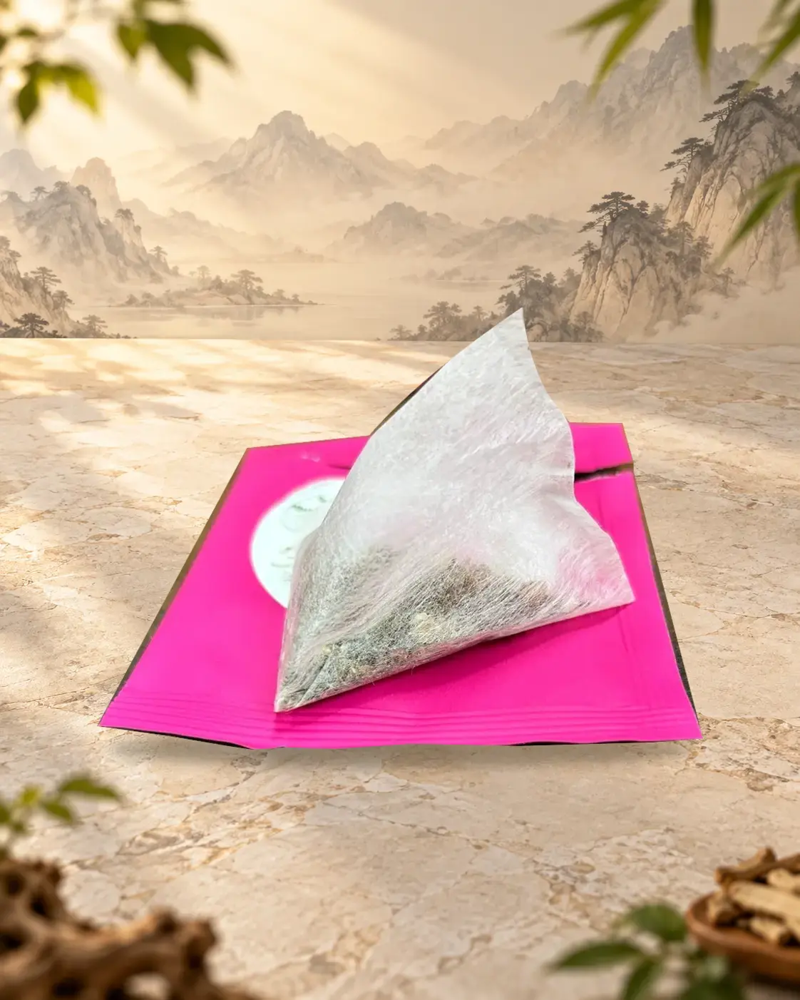
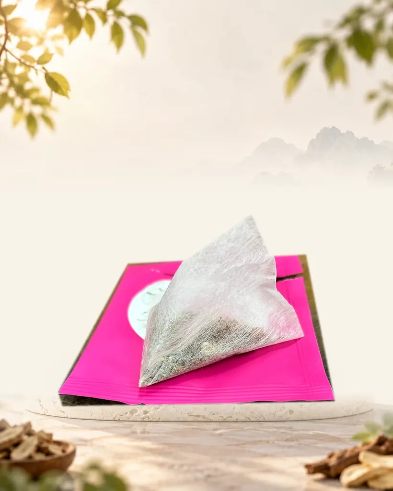
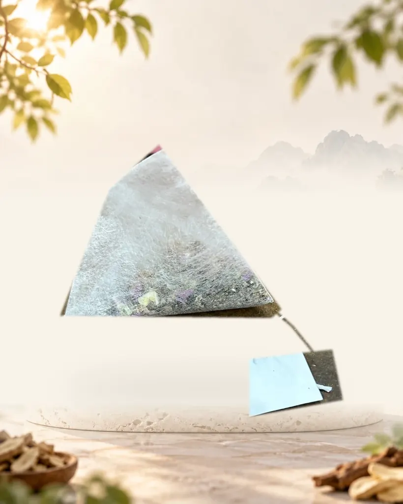

茶飲・丹參茶包
丹參茶包系列
六款茶包整理在同一頁。依名稱、原料與實物照片比較，選擇想了解的款式。
共 6 款每款 3公克／包・10包／盒
商品圖片經去背、光線及情境背景處理，因拍攝角度與螢幕顯示可能略有差異；實際外觀、尺寸、包裝及標示請以收到的實品為準。
茶包系列
六款口味與商品款式
六款茶包分別展示實體包裝與原料資訊，實際內容請以商品包裝標示為準。
茶包實物
三角茶包與單包外觀
以下為實際茶包形式的拍攝示例，不代表六款的原料及內容物完全相同；各款以實際包裝及標示為準。


系列共通資訊
沖泡與保存
以下說明適用本頁六款茶包；各款原料請見上方介紹。
包裝規格
- 3公克／包，10包／盒
沖泡方式
- 每包以約500cc冷或溫開水浸泡3～5分鐘，依原廠包裝標示
保存方式
- 置於陰涼乾燥處，避免陽光直射
- 拆封後請盡早使用完畢
注意事項
- 展示照片為樣品包裝，實際供貨批次與有效日期以現貨標示為準
- 商品資訊與可提供的交易方式需依商品法定類別、實際供貨及原廠標示確認